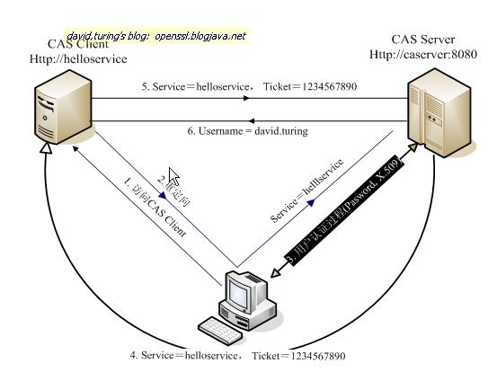

cas、sso的原理详解
一、CAS组成
CAS包括CAS Server和CAS Client两部分组成 :
CAS Server
CAS Server需要独立部署，用于完成对用户的认证工作，包括用户名/密码的认证、票据的认证。
CAS Client
CAS Client与受保护的客户端应用部署在一起，用于做登录校验，比如统一后台的服务与CAS客户端一起部署。通过filter的方式过滤从浏览器打到统一后台的每一个请求，分析http请求头中是否包含请求Service Ticket，如果没有则说明用户没有经过认证，于是CAS Client会重定向用户请求到CAS Server登录页面并且会带上浏览器要请求的目标地址，输入用户名和密码进行认证，认证成功会生成一个长度相当、唯一、不可伪造的Service Ticket，并且缓存在CAS Server中，并为客户端浏览器生成一个Ticket Granted Cookie（TGC）并重定向到之前浏览器要访问的目标地址（即CAS Client）（附带上生成的ServiceTicket），这时http头中有ST参数，CAS Client会与CAS Server请求认证ST。认证成功Client创建session返回浏览器。
二、CAS核心票据
TGT（Ticket Granting Ticket）
TGT是CAS为用户签发的登录凭证，是缓存在CAS Server中的对象，封装了Cookie值以及此Cookie值对应的用户信息。用户在浏览器到Client Server之间认证时使用ssl协议，认证成功后生成的Cookie称为TGC，写入到浏览器头部，同时在CAS Server中生成一个TGT对象放入自己的缓存，TGT对象的ID就是cookie的值。
TGC（Ticket Granting Ticket）
TGC 是存放用户凭证的key值，也是保存在浏览器的Cookie，当与Client Server通信时，会去Server放入缓存中以Cookie为key查询有没有用户信息，如果有说明登录过，如果没有用户需要重新登录。
ST（Service Ticket）cas普通模式
ST 是CAS签给浏览器的访问某一服务Service的票据，浏览器访问Service时，Service发现用户没有ST，则重定向到SSO Server获取，如果用户包含TGC，则在SSO Server缓存中查询TGT对象，如果存在TGT对象则会签发一个ST对象，将ST作为请求参数重定向到用户要访问的Service，Service获得ST（ST的ticketGrantingTicket属性值是TGT对象），Service（CAS Client）拿着ST与 SSO Server（即CAS Server） 进行验证认证用户的登录状态返回一个xml数据，包含验证成功的信息，若认证成功则Service与浏览器会建立一个Session关系保留登录成功状态，这个作为session保存登录状态的cookie与CAS无关。
PGT（Proxy Granting Ticket）cas代理模式
PGT 是由ST签发的票据。浏览器持有ST去访问Proxy Service，Proxy Service调用SSO Server（CAS Server）的serviceValidate接口验证ST，若在CAS Server上验证成功，CAS Server会首先调用PGTurl（是一个https url）将生成的PGT及PGTIOU传输给Proxy Service，Proxy Service会以PGTIOUS为key，PGT为value存储在Map中；然后CAS会生成验证ST成功的xml消息（包含PGTIOUS）返回给Proxy Service，Proxy Service拿到PGTIOUS会从自身的缓存map中拿到PGT，从中取出用户信息。（PGT中保存着签发ST的TGT对象）
PT（Proxy Ticket）cas代理模式
PT 是由PGT签发的票据。类似于TGT签发ST，在代理模式下，PT是用户访问back-end service的票据。当用户访问的是一个Web应用，web应用要求一个ST，那么浏览器拿着TGC去获得ST即可访问Web应用，而对于一个C/S结构的应用，得不到cookie。不能直接访问back-end Service 而是通过访问Proxy Service的接口，凭借Proxy Service的PGT获取PT票据然后访问back-end Service，
问题是如何获得PGT票据，那么根访问普通代理模式一样首先重定向到SSO Server，两种情况：
1、如果有TGC就与Server的TGT比较，成功则生成ST票据作为请求参数，重定向到Proxy Service
2、如果没有TGC，SSO Server返回登录界面，用户填写用户名和密码认证，认证成功生成TGT并返回TGC到浏览器头部，同时签发一个ST票据作为请求参数重定向到Proxy Service
通过以上两步任意一步，Proxy Service 或得ST票据与SSO Server进行认证，经过PGT中的步骤获得PGT票据，然后Proxy Service传递PGT与back-end Service的地址给SSO Server获得PT票据，Proxy Service将PT票据作为请求参数调用back-end Service接口，back-end Service获得PT票据调用SSO Server的接口认证PT票据，认证成功则返回业务数据给Proxy Service。
三、CAS流程解读（普通模式）

详细过程:
- 用户访问产品 a，域名是 www.a.cn。
- 由于用户没有携带在 a 服务器上登录的 a cookie，所以 a 服务器返回 http 重定向，重定向的 url 是 SSO 服务器的地址，同时 url 的 query 中通过参数指明登录成功后，回跳的a 页面。重定向的url 形如 sso.cn/login?service=https%3A%2F%2Fwww.a.cn。
- 由于用户没有携带在 SSO 服务器上登录的 TGC（看上面，票据之一），所以 SSO 服务器判断用户未登录，给用户显示统一登录界面。用户在 SSO 的页面上进行登录操作。
- 登录成功后，SSO 服务器构建用户在 SSO 登录的 TGT（又一个票据，用于身份验证TGC，并生成ST票据），同时返回一个 http 重定向。这里注意：
- 重定向地址为之前写在 query 里的 a 页面。
- 重定向地址的 query 中包含 sso 服务器派发的 ST。
- 重定向的 http response 中包含写 cookie 的 header。这个 cookie 代表用户在 SSO 中的登录状态，它的值就是 TGC，保存在了sso的域下面，下此访问sso会带上这个cookie。
- 浏览器重定向到产品 a。此时重定向的 url 中携带着 SSO 服务器生成的 ST。
- 根据 ST，a 服务器直接向 SSO 服务器发送请求，SSO 服务器验证票据的有效性。验证成功后，a 服务器知道用户已经在 sso 登录了，于是 a 服务器构建用户登录 session，记为 a session。并将 cookie 写入浏览器。注意，此处的 cookie 和 session 保存的是用户在 a 服务器的登录状态，和 CAS 无关。
注意上面只能在同一个浏览器访问的时候才能实现单点登录，因为当用户访问b的时候，这个时候要重定向到sso服务器 sso.cn/login?service=https%3A%2F%2Fwww.b.cn。 由于之前访问a的时候浏览器在sso域下生成了cookie TGC，这时候重定向到sso旧会带上这个TGC，然后sso服务器使用TGC寻找其服务器缓存的TGT对象，并生成一个ST票据，将ST作为query参数重定向回b服务器，这时候b服务器就拿着这个ST直接请求sso服务器验证ST的正确性，验证成功的话，b就构建用户登录 session。